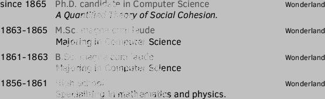
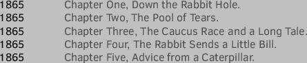
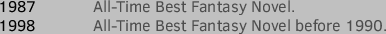
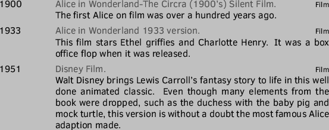

Alice is a sensible prepubescent girl from a wealthy English family who finds herself in a strange world ruled by imagination and fantasy. Alice feels comfortable with her identity and has a strong sense that her environment is comprised of clear, logical, and consistent rules and features. Alice's familiarity with the world has led one critic to describe her as a "disembodied intellect". Alice displays great curiosity and attempts to fit her diverse experiences into a clear understanding of the world.
pursuer of rabbits/5.8,good manners/4,outgoing/4.3,polite/4,Java/0.01
lovely/4,narcissistic/3
The heroine and the dreamer of Wonderland; Alice is the principal character.




Alice approaches Wonderland as an anthropologist, but maintains a strong sense of noblesse oblige that comes with her class status. She has confidence in her social position, education, and the Victorian virtue of good manners. Alice has a feeling of entitlement, particularly when comparing herself to Mabel, whom she declares has a ``poky little house," and no toys. Additionally, she flaunts her limited information base with anyone who will listen and becomes increasingly obsessed with the importance of good manners as she deals with the rude creatures of Wonderland. Alice maintains a superior attitude and behaves with solicitous indulgence toward those she believes are less privileged.
This document was generated using the LaTeX2HTML translator Version 2008 (1.71)
Copyright © 1993, 1994, 1995, 1996,
Nikos Drakos,
Computer Based Learning Unit, University of Leeds.
Copyright © 1997, 1998, 1999,
Ross Moore,
Mathematics Department, Macquarie University, Sydney.
The command line arguments were:
latex2html -split 1 template.tex
The translation was initiated by source on 2016-09-27